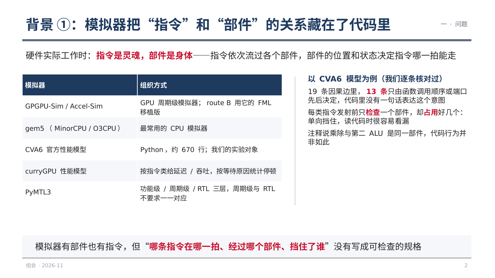
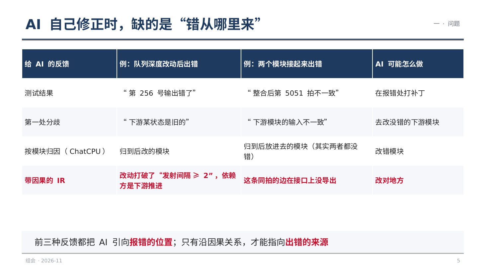
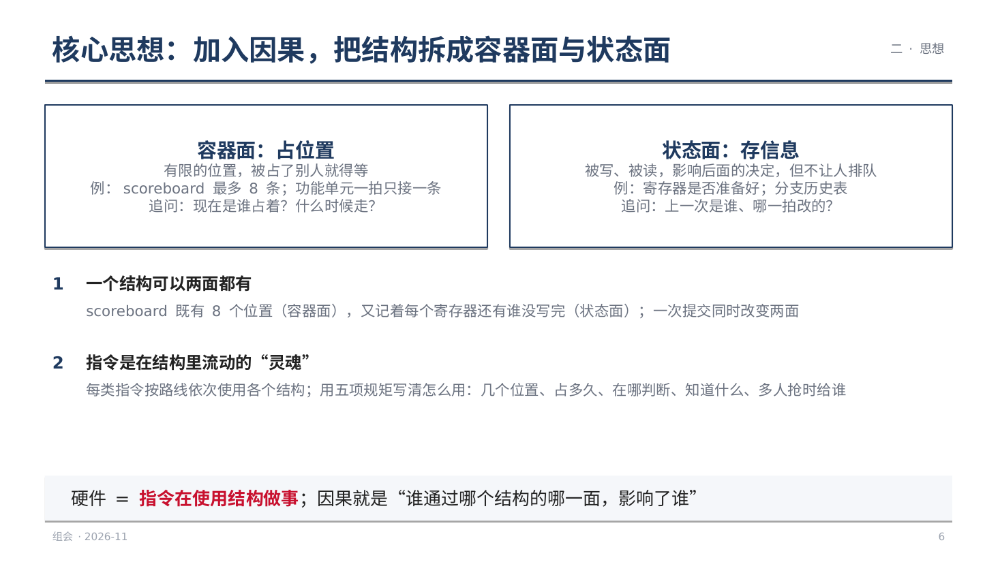
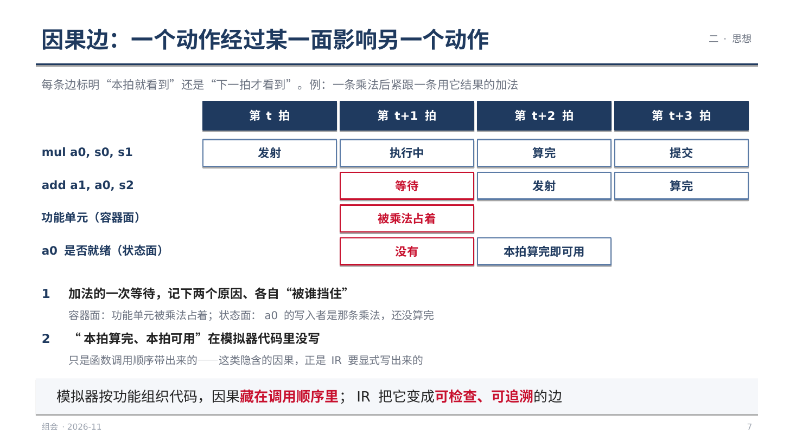
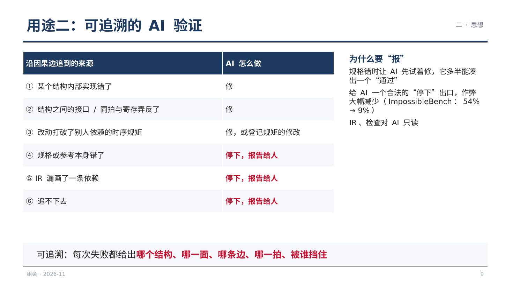
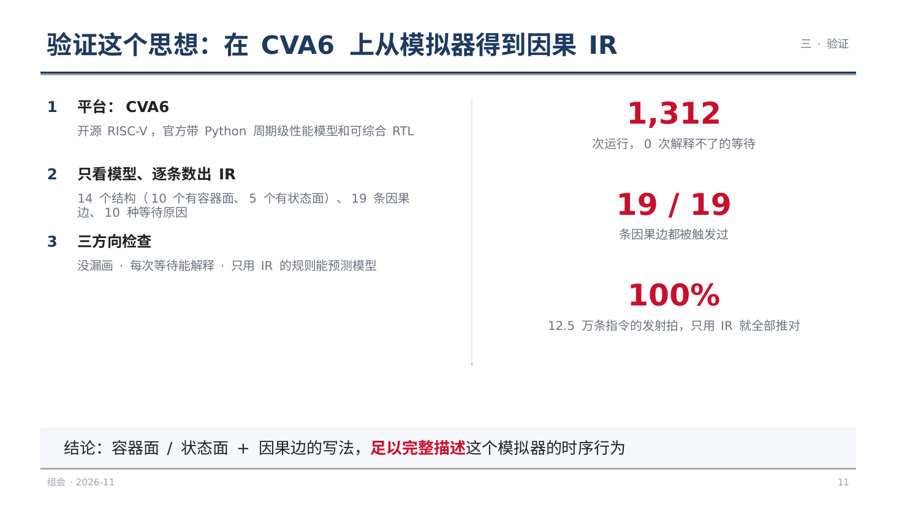
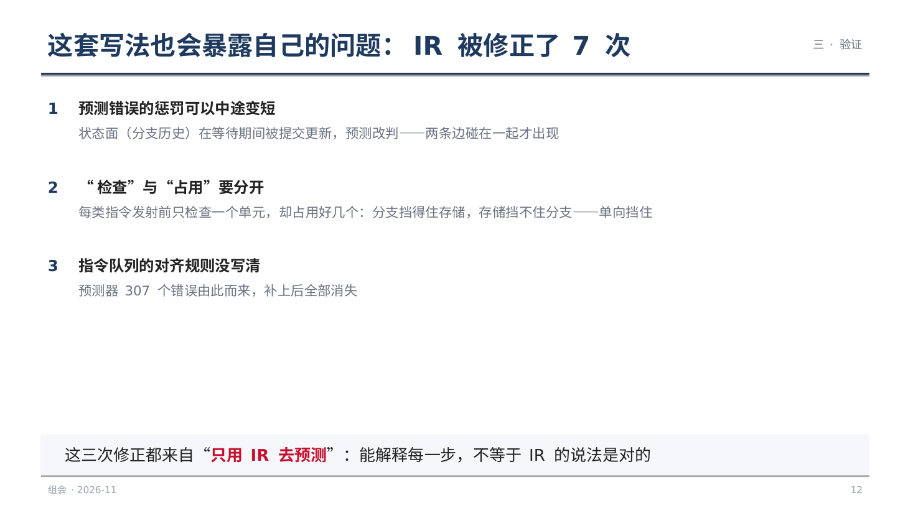
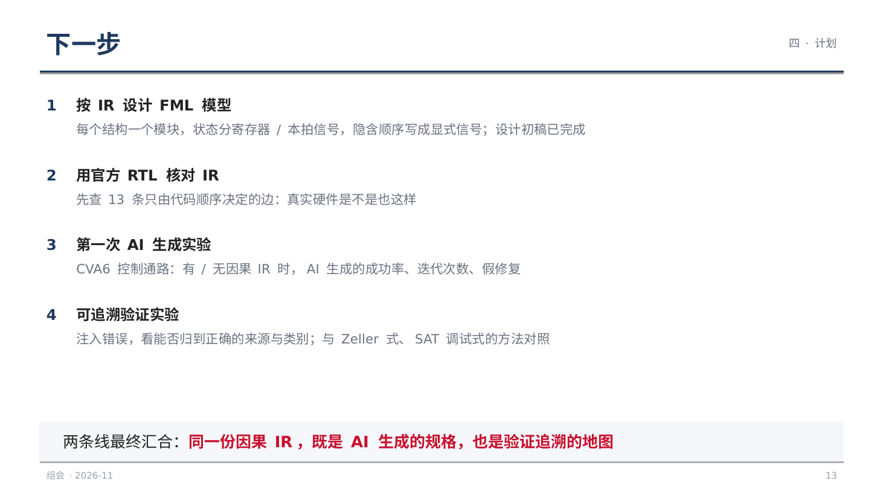
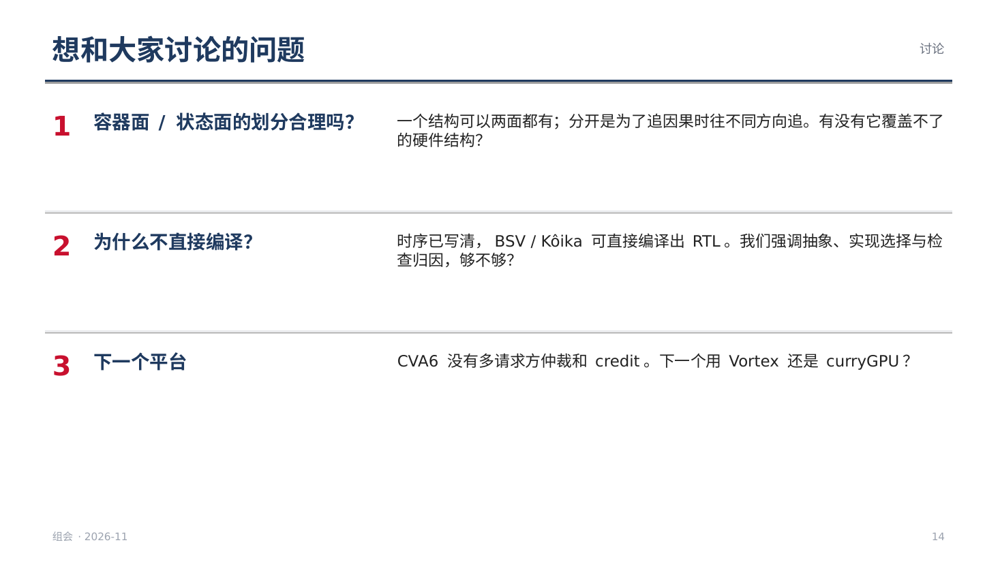

组会 2026-11：带因果的结构 IR（14 页，含讲稿备注）
第 1 页今天只讲一件事：我们在 RTL 的结构描述里加入因果关系，把内部结构拆成容器面和状态面，用它来让 AI 生成更复杂的 RTL，并且在出错时能追到错从哪里来。
第 2 页
措辞要准：不是说模拟器没有部件和指令的概念——gem5 的功能单元按指令类型配置，GPGPU-Sim 有流水线寄存器和 scoreboard。我们说的是：指令与部件之间的因果关系隐含在代码执行顺序里。右边三条是我们在 CVA6 模型上逐条核对的结果；对 gem5、GPGPU-Sim 是同类的经验判断，未逐条验证。
第 3 页注意出处：3% → 88% 和 < 1.25 倍出自 Representation Bottleneck，不是 HINT（旧笔记 survey/08-conclusions 把两者写在一起，引用时要分开）。HINT 是 Qiang Xu 组的工作；FML 是合作者的框架。这一页的逻辑：表示层比模型更重要；我们的表示层在 HINT 的基础上加了周期级的因果与容器面 / 状态面。
第 5 页
这张表来自 v4 §1.3。只给测试结果时，AI 还容易插寄存器、加 lint_off 之类的假修复。别的领域也有数字：SWE-bench 上 AI“已解决”的补丁约 11% 不正确（ICSE'26）。
第 6 页
这是思路总结 §1.10 的内容。分开“占位置”和“存信息”，是因为追因果时要往不同的方向追：被占位置挡住，要找占着的人；因为信息没准备好，要找写它的人。
第 7 页
CVA6 模型的 IR 里有 19 条因果边，其中 13 条只由调用顺序或端口先后决定。
第 8 页这是 11-06 的决定：生成提升为论文一主线的一部分（思路总结 §1.11）。
第 9 页
理论上属于基于模型的一致性诊断（Reiter 1987）；我们把连线和规格条目也当作可能出错的部件。
第 10 页细节见 survey/25-gen-summary、survey/27-xdomain-summary。审稿人一定会问：既然时序都写清了，为什么不直接编译？我们的回答：模型有大量抽象，同一时序有多种实现，重点在检查与归因——待实验支撑。
第 11 页
测试程序直接生成：单条指令、两两组合、压满资源，在 32 组参数下运行。预测器不调用模型，只按 IR 推算。
第 12 页
每次修正都有证据、记录在案，旧条目不删、标为已被替代。
第 13 页
论文二（IR 不完整时怎么办）、论文三（性能瓶颈）在此基础上展开。
第 14 页
第一个问题最想听意见。